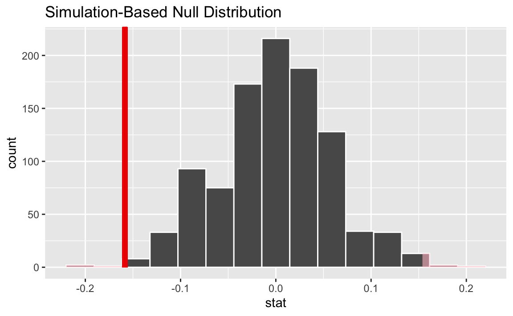
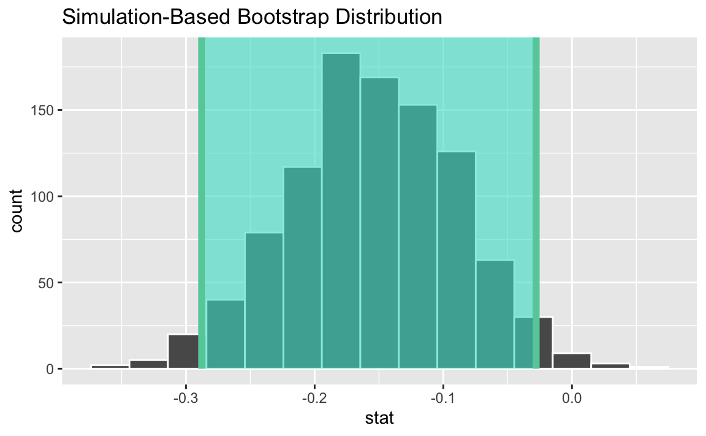

library(tidyverse)
library(tidymodels)AE 16: Equality
Suggested answers
Application exercise
Suggested answers
In this application exercise, we’ll do inference on two population proportions.
Packages
We’ll use the tidyverse and tidymodels packages.
Data
A September 16-19, 2023, asked North Carolina voters, among other issues, about issues of equality and women’s progress. Specifically, one of the questions asked:
Which of these two statements come closest to your own views—even if neither is exactly right?
The country has made most of the changes needed to give women equal rights with men.
The country needs to continue to make changes to give women equal rights to men.
The results of this survey are summarized in this report and the data can be found in your data folder: equality.csv.
Hypotheses
Exercise 1
The two populations of interest in this survey are 18-24 year olds and 25+ year olds. State the hypotheses for evaluating whether there is a discernible difference between the proportions of those who think “The country needs to continue to make changes to give women equal rights to men.” (need more changes) in the two age groups.
Let \(p\) = the true proportion of those who think “The country needs to continue to make changes to give women equal rights to men” among 18-24 year old NC voters and 25+ year old NC voters.
\(H_0: p_{18-24} = p_{25+}\)
\(H_A: p_{18-24} \ne p_{25+}\)
Exploratory analysis
Load the data.
equality <- read_csv("https://sta199-s24.github.io/data/equality.csv")Exercise 2
What proportion of 18-24 year olds think “The country needs to continue to make changes to give women equal rights to men”? What proportion of 25+ year olds? Calculate and visualize these proportions.
equality |>
count(age, response) |>
group_by(age) |>
mutate(p_hat = n / sum(n))# A tibble: 4 × 4
# Groups: age [2]
age response n p_hat
<chr> <chr> <int> <dbl>
1 18-24 Most changes done 32 0.478
2 18-24 Need more changes 35 0.522
3 25+ Most changes done 211 0.319
4 25+ Need more changes 450 0.681ggplot(equality, aes(y = age, fill = response)) +
geom_bar(position = "fill")
Exercise 3
Calculate the observed sample statistic, i.e., the difference between the proportions of respondents who think “The country needs to continue to make changes to give women equal rights to men” between the two age groups.
obs_stat <- equality |>
specify(response = response, explanatory = age, success = "Need more changes") |>
calculate(stat = "diff in props", order = c("18-24", "25+"))
obs_statResponse: response (factor)
Explanatory: age (factor)
# A tibble: 1 × 1
stat
<dbl>
1 -0.158Testing
Exercise 4
What is the parameter of interest?
Difference between the proportions of those who think “The country needs to continue to make changes to give women equal rights to men” between 18-24 and 25+ year old NC voters.
Exercise 5
Explain how you can set up a simulation for this hypothesis test.
Add response here.
Exercise 6
Conduct the hypothesis test using randomization and visualize and report the p-value.
set.seed(1234)
null_dist <- equality |>
specify(response = response, explanatory = age, success = "Need more changes") |>
hypothesize(null = "independence") |>
generate(reps = 1000, type = "permute") |>
calculate(stat = "diff in props", order = c("18-24", "25+"))
null_dist |>
get_p_value(obs_stat = obs_stat, direction = "two sided")# A tibble: 1 × 1
p_value
<dbl>
1 0.012null_dist |>
visualize() +
shade_p_value(obs_stat = obs_stat, direction = "two sided")
Exercise 7
What is the conclusion of the hypothesis test?
With a p-value of 0.018, which is smaller than the discernability level of 0.05, we reject the null hypothesis. The data provide convincing evidence that there is a difference between the proportions of those who think “The country needs to continue to make changes to give women equal rights to men”.
Exercise 8
Interpret the p-value in the context of the data and the hypotheses.
The probability of observing a difference in sample proportions of those who think “The country needs to continue to make changes to give women equal rights to men” between a sample of 67 18-24 year olds and 661 25+ year olds of 0.158 or more (in either direction) is 0.018 if in fact the two population proportions are equal.
Estimation
Exercise 9
Estimate the difference in population proportions of 18-24 year old NC voters and 25+ year old NC voters using a 95% bootstrap interval.
set.seed(1234)
boot_dist <- equality |>
specify(response = response, explanatory = age, success = "Need more changes") |>
generate(reps = 1000, type = "bootstrap") |>
calculate(stat = "diff in props", order = c("18-24", "25+"))
ci <- boot_dist |>
get_ci()
ci# A tibble: 1 × 2
lower_ci upper_ci
<dbl> <dbl>
1 -0.288 -0.0279visualize(boot_dist) +
shade_ci(ci)
Exercise 10
Interpret the confidence interval in context of the data.
We are 95% confident that the proportion of 18-24 year old NC voters who think “The country needs to continue to make changes to give women equal rights to men” is 28.4% to 3.4% lower than 25+ year old NC voters who share this opinion.
Exercise 11
Describe how the simulation scheme for bootstrapping is different than that for the hypothesis test.
For bootstrapping we resample with replacement. For testing, we shuffle under the assumption of independence.
Conceptual
Exercise 12
What is \(p\) vs. \(\hat{p}\) vs. p-value. Explain generically as well as in the context of these data and research question.
Add response here.
Exercise 13
What is bootstrap distribution vs. null distribution? Explain generically as well as in the context of these data and research question.
Add response here.